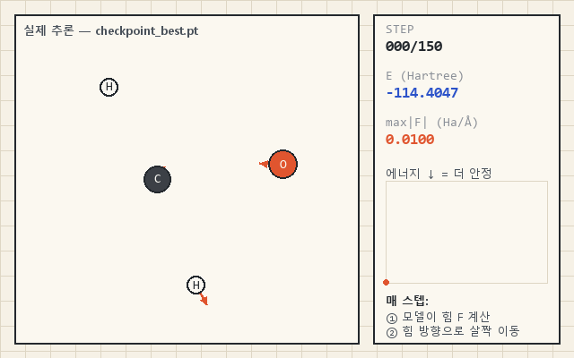

0030초 요약 — 이 모델이 하는 일
원자가 흩뿌려져 있으면 ML이 각 원자에 걸리는 힘을 계산하고, 조금 더 안정해지는 방향으로 반복해서 움직여 점점 더 안정한 배치를 찾아갑니다. 그게 전부입니다.

01한 문장으로
원자의 종류(H/C/N/O)와 3차원 좌표만 주면, 이 분자의 퍼텐셜 에너지를 스칼라 하나로 뱉는 함수 \(E(\{Z_i\},\{\mathbf r_i\})\)를 신경망으로 근사합니다.
에너지 하나만 잘 맞히면 나머지는 미분이 알아서 해줍니다. 원자에 걸리는 힘은 \(\mathbf F_i=-\partial E/\partial \mathbf r_i\) 이므로, 미분 가능한 에너지 모델을 한 번 만들어 두면 힘은 autograd 한 줄로 따라옵니다. 이것이 NNP(neural network potential)의 기본 계약이고, 이 모델도 정확히 그 계약을 따릅니다.
class Chemical_Model(nn.Module): def __init__(self, dim, rel_dim, num_atoms): ''' 1차적으로 주변 관계를 이용해서 원자를 update 2차적으로 거리, 관계 원자간 관계를 이용해서 Energy 계산 1차 update시 0번 원소를 기준점(물리학 적으로 말 됨. 전부 상대적 위치관계니까) 이거 기준으로 각도, 거리 정보와 원자정보로 attention이나 -거리 softmax를 이용해서 update dim을 2 부분으로 나눠서 각도따라 달라짐 / 안달라짐 두 파트로 ''' ... self.rel_emb = nn.Embedding(num_atoms**2, rel_dim) # 두 원자간 상호작용을 모사한다. 많은 것들이 섞여 있어서 힘은 아니다 ex: 힘, 전자 끌림, 기타... # 서은희 선생님 PPT에 따라 두 원자간 상호작용은 r^-6으로 하기로 함. 수십 nm 거리에서는 # 지연효과 때문에 r^-7이 되기도 하고 너무 가까우면 r^-12가 되기도 하지만 너무 극단적인 # 케이스들이기도 하고 효율성을 지키며 구현하기 어려울 것 같아서 r^-6으로 함 # 거리 기준은 3.4임. ... 그냥 그 사이에 의미있는 숫자인 3.4로함 (나는야 34기^^)
02설계 철학 — 대칭성을 공짜로 얻는다
분자의 에너지는 그 분자를 통째로 ‘평행이동’ 하든, ‘회전’ 하든, ‘대칭이동(거울상)’ 하든 바뀌지 않습니다. 이 물리적 대칭성을 모델 구조에 직접 박아 넣음으로써, 신경망이 데이터로 “대충 배우게” 두지 않고 애초에 어길 수 없게 만든 것 — 그게 이 모델 뼈대의 핵심입니다. 아래 세 가지가 학습이 아니라 구조로 보장됩니다.
절대좌표를 버리고 상대좌표만 쓴다
분자를 통째로 옮겨도 에너지는 그대로여야 합니다. 그래서 좌표를 그대로 넣지 않고,
모든 원자쌍의 상대 위치벡터로 먼저 바꿉니다 (to_RCS). 절대 위치는 애초에 모델이 보지 못합니다.
방향 벡터를 만들어 합치고, 마지막에 “크기”만 잰다
분자를 돌리면 힘의 방향은 같이 돌지만 에너지는 안 변합니다. 그래서 방향이 있는 벡터를 만들어 이웃끼리 더한 뒤, 벡터의 길이(norm)를 취해 회전에 무관한 스칼라로 되돌립니다. — 이 노트의 하이라이트.
총에너지 = 원자별 에너지의 합
원자 수가 늘면 에너지도 대체로 비례해 늘고, 원자 번호를 바꿔 세도 값은 같아야 합니다.
그래서 원자마다 에너지를 하나씩 뽑아 단순 합산합니다 (torch.sum).
여기에 “물리 선험지식” 한 스푼
순수 대칭성만으로는 부족합니다. 두 원자 사이 상호작용이 거리에 따라 어떻게 죽는지를 데이터가 밑바닥부터 배우게 하는 대신, 모양을 미리 정해 줍니다: 상호작용 세기를 \((3.4/r)^6\) 으로 감쇠시킵니다 — London 분산력을 닮은 \(r^{-6}\) 꼴입니다.
03아키텍처 흐름
입력 molecules [b,n](원자 종 인덱스)와 coords [b,n,3](좌표)가
에너지 [b]로 가는 길은 크게 세 걸음입니다.
각 상자 아래 회색 글씨가 그 시점의 텐서 모양입니다 — 여기서 차원이 어떻게
붙었다 접히는지가 곧 설계입니다.
Step 1 — 왜 상대좌표부터인가
첫 줄부터 절대좌표를 포기합니다. to_RCS는 좌표를 모든 원자쌍의 상대 위치로 바꿉니다.
[i,j] 성분은 “i가 바라본 j의 방향·거리”이고, [i,i]는 당연히 영벡터입니다.
이 순간 병진 불변은 끝난 얘기가 됩니다 — 모델은 원자가 공간 어디에 있는지 아예 볼 수 없습니다.
# [b,n,3] → [b,n,n,3] : [i,j]는 i가 본 j의 상대좌표, [i,i]=0 def to_RCS(self, x): res = x[:, None, :, :] - x[:, :, None, :] return res
그 다음, 원자쌍마다 학습된 상호작용 임베딩을 붙입니다(rel_emb).
주석의 표현을 빌리면 “힘, 전자 끌림, 기타… 많은 것이 섞인” 한 덩어리라서 힘 그 자체는 아닙니다.
여기에 앞의 \((3.4/r)^6\) 감쇠를 곱해 거리를 반영하고, MLP로 한 번 다듬습니다.
이 단계의 MLP는 이름부터 nri(not rotationally invariant) — 아직 방향을 입기 전이라는 표시입니다.
Step 1의 결정타 — 방향을 입혀 벡터로 세운다
여기까지의 상호작용은 방향 없는 스칼라 다발입니다. 이걸 단위 방향벡터 \(\hat{\mathbf r}_{ij}\)에 곱해서, 각 상호작용 채널을 3차원 공간에 “세웁니다”. 이제 분자를 돌리면 이 벡터들도 같이 돕니다 — 회전 등변(equivariant) 상태입니다.
# ③ 스칼라 상호작용 × 단위 방향 → 방향 있는 벡터 relative = relative[:, :, :, :, None] * rcs_unit[:, :, :, None, :] # → [b, n, n, rel_dim, 3] # ④ 이웃(n)에 대해 벡터를 그냥 더한다 (물리적 영향 벡터들의 합) relative = torch.sum(relative, dim=-1) # [b, n, rel_dim, 3] # ⑤ 각 채널 3-벡터의 '길이'를 취한다 → 회전 불변 스칼라 relative = torch.pow((relative @ relative)... , 0.5) # [b, n, rel_dim]
Step 2·3 — 다시 스칼라의 세계에서
길이를 취한 순간 회전 정보는 “무엇을” 대신 “얼마나”로 요약되어 회전 불변이 됩니다.
여기에 원자 종 임베딩을 이어 붙이고(그래야 “이 자리가 탄소냐 산소냐”를 압니다),
ri(rotationally invariant) MLP를 통과시킨 뒤, 원자마다 에너지 스칼라를 하나씩 뽑아
전부 더하면 그게 분자의 총에너지입니다.
relative = torch.cat([self.emb(molecules), relative], dim=-1) # 종 정보 합류 relative = self.Step2(relative) # RI-MLP ENERGY = self.ENERGY(relative).squeeze(-1) # 원자별 에너지 [b,n] return torch.sum(ENERGY, dim=-1) # 총에너지 [b]
04이 노트의 하이라이트 — “벡터로 만들고 길이를 재는” 트릭
회전 불변 모델을 만드는 가장 쉬운 길은 처음부터 거리 같은 스칼라만 쓰는 것입니다. 하지만 그러면 방향·각도 정보가 통째로 날아갑니다. 이 모델은 대신 영리한 우회를 택합니다: 방향을 살려 벡터로 만들고 → 이웃끼리 벡터로 더한 뒤 → 마지막에 길이만 잰다. 벡터 합에는 각도가 배어 있지만, 길이는 회전을 타지 않으니 각도의 흔적을 스칼라로 남길 수 있습니다.
05힘은 미분으로 — 공짜지만 공짜가 아니다
에너지가 미분 가능하니 힘은 학습 없이 autograd로 떨어지고, 하나의 스칼라 장에서 내려온 기울기라 보존력(conservative)입니다.
\[ \mathbf F_i \;=\; -\frac{\partial E}{\partial \mathbf r_i} \]단, 모델이 맞히는 건 날것의 \(E\)가 아니라 두 상수 \(\mathbf E_{\text{ref}}\!\cdot\sigma\)로 정규화한 값입니다. 예측 에너지는 이렇게 복원됩니다:
\[ E \;=\; \sigma\,\underbrace{\text{out}}_{\text{모델 출력}} \;+\; \underbrace{\mathbf n\cdot\mathbf E_{\text{ref}}}_{\textbf{atomic reference energy}\ (\text{좌표 무관 상수})} \]\(\mathbf n=(n_{\rm H},n_{\rm C},n_{\rm N},n_{\rm O})\) 원소별 개수 · \(\mathbf E_{\text{ref}}\) atomic reference energy · \(\sigma\) 잔차 표준편차
\(\mathbf E_{\text{ref}}\) = atomic reference energy, 원자 하나가 그냥 존재해서 깔리는 에너지 몫. 총에너지의 대부분을 차지하므로, 최소제곱으로 적합해 빼고 남은 잔차만 학습합니다 (원자화에너지와 같은 발상):
\[ \mathbf E_{\text{ref}} \;=\; \arg\min_{\mathbf c}\sum_{\text{mol}}\big(E-\mathbf n\cdot\mathbf c\big)^2 \;\approx\; (-0.60,\,-38.04,\,-54.67,\,-75.16)\ \text{Ha} \]이제 힘을 구하면 상수 항은 미분에서 사라지고 \(\sigma\)만 남습니다:
\[ \mathbf F_i = -\,\sigma\,\frac{\partial\,\text{out}}{\partial \mathbf r_i} \;-\; \underbrace{\frac{\partial(\mathbf n\cdot\mathbf E_{\text{ref}})}{\partial \mathbf r_i}}_{=\,0} \;=\; -\,\sigma\,\frac{\partial\,\text{out}}{\partial \mathbf r_i} \]\(\sigma\)는 눌러놨던 스케일을 Hartree/Å로 되돌리는 환산 계수 — 빼먹으면 방향은 맞고 크기만 \(\sigma\)배 틀림.
out = model(z, coords) # 정규화 에너지 [b] grad = torch.autograd.grad(out.sum(), coords)[0] # ∂out/∂r forces = -std * grad # F = -∂E/∂r [Hartree/Å]
06학습은 어떻게 걸렸나 (핵심만)
설계 얘기의 곁가지지만, 두 가지 결정이 성능에 크게 작용합니다.
- 바탕값 차감. 총에너지의 대부분은 “어떤 원자들이 있는가”로 이미 정해집니다. 최소제곱으로 H·C·N·O의 atomic reference energy를 구해 빼고, 남은 결합·형태 잔차만 학습합니다 (원자화에너지와 비슷한 발상). 이걸 안 하면 신경망이 큰 상수를 외우느라 헤맵니다.
- 원자 수별 배칭. 모델에 패딩·마스킹이 없어 한 배치의 원자 수 \(n\)이 같아야 합니다. 그래서 분자를 원자 수로 묶어 배치를 만듭니다 (종은 임베딩이 구분하므로 분자식이 달라도 섞어도 됩니다).
07한계 — 자랑 전에, 못하는 것부터
이 v1은 구조와 물리를 검증한 프로토타입이지 완성된 계산기가 아닙니다. 지금 이 모델이 못하거나 엄밀히 틀린 지점을 그대로 적어 둡니다.
“atomic reference energy”는 사실 base energy가 아니다
학습은 원소 개수만으로 총에너지를 맞추는 최소제곱으로 \(E_Z\)를 fit합니다:
\[ E \;\approx\; \sum_Z n_Z\,E_Z \]이 식은 개수 \(n_Z\)만 쓰고 배열·좌표·결합·각도는 전혀 쓰지 않습니다. 그러니 \(E_Z\)는 “원자 하나가 존재해서 깔리는 진짜 에너지”가 아니라, 그저 총에너지를 원소 개수로 맞춘 최소제곱 계수일 뿐입니다. 남는 잔차
\[ E_{\text{residual}} \;=\; E_{\text{total}} - \sum_Z n_Z\,E_Z \]는 배열·좌표 효과를 담지만, 기준을 어떻게 잡느냐에 따라 양수도 음수도 됩니다. §05에서 편의상 “깔리는 몫”이라 불렀지만, 엄밀히 이걸 base energy라 부르는 건 부정확합니다.
\(r^{-12}\)를 안 넣어서 원자가 툭하면 달라붙는다
상호작용을 \(r^{-6}\) 하나로만 뒀습니다. 가까울수록 세지는 인력만 있고, 겹침을 막는 반발항 \(r^{-12}\)이 없습니다. 그래서 완화·동역학을 돌리면 원자들이 서로 붙어 무너지는(collapse) 방향이 생길 수 있습니다.
\(r^{-6}\)을 “직접 거듭제곱해서” GPU를 온전히 못 쓴다
거리마다 \((3.4/r)\)을 만들어 6제곱을 그대로 계산합니다(torch.pow(·, 6)).
이 방식은 모든 원자쌍 \([b,n,n]\)에 대해 나눗셈·거듭제곱 원소 연산을 매번 수행해서,
GPU가 잘하는 행렬곱 위주 파이프라인을 끊어 놓습니다. 그래서 하드웨어를 온전히
활용하지 못했고, 낼 수 있는 최고 속도를 내지 못했습니다.
솔직히, 아직 성능이 낮다
best val MAE ≈ 36 kcal/mol. “화학적 정확도”라 부르는 1 kcal/mol과는 한참 떨어져 있습니다. 각도를 norm 하나로만 요약한 표현력, 단일 \(r^{-6}\), 4원소 한정이 겹친 결과입니다 — 다음 버전의 숙제입니다.
벤치마크 테스트를 안 했다
지금 있는 숫자는 ANI-1x에서 스스로 떼어낸 검증셋 MAE 하나뿐입니다. 표준 벤치마크(COMP6 등)나 다른 NNP·DFT와의 정확도·속도 비교는 돌리지 않았습니다. 그래서 “얼마나 좋은/빠른 모델인가”를 바깥 기준으로는 아직 말할 수 없습니다.
08v1/model 파일 지도
이 노트가 다룬 “설계”는 굵게, 나머지 배관은 흐리게 표시했습니다.